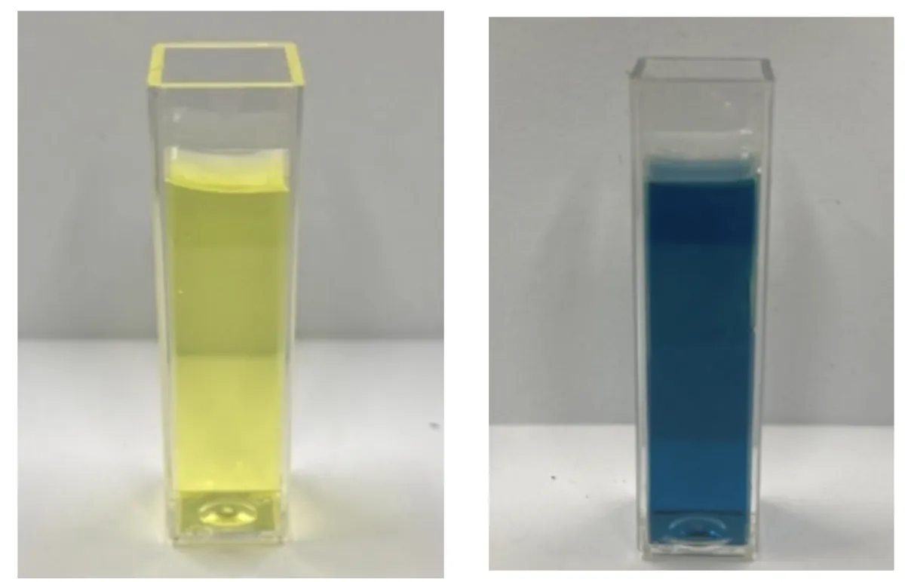
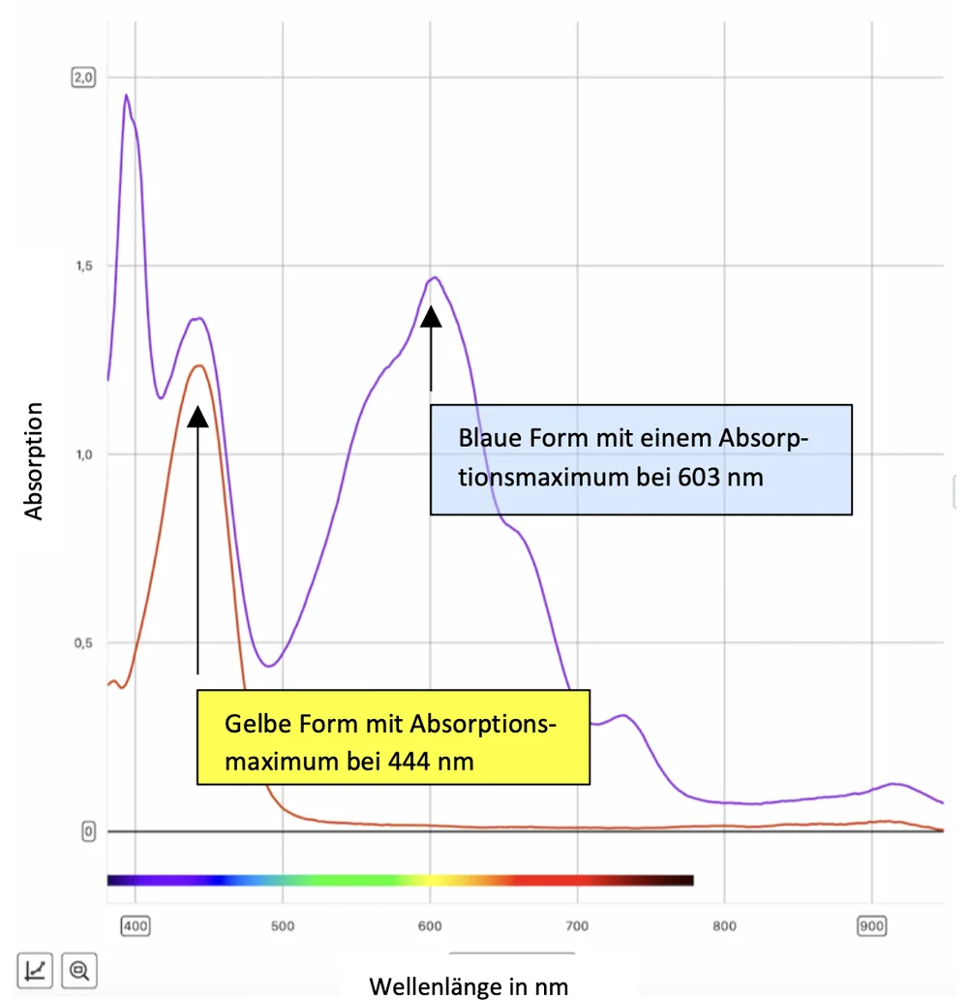
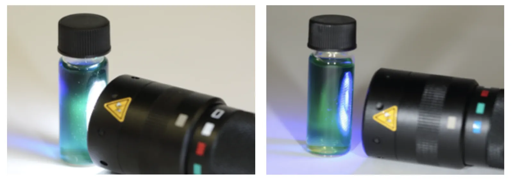
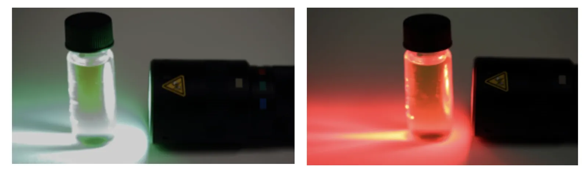
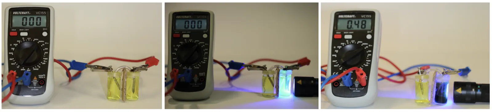
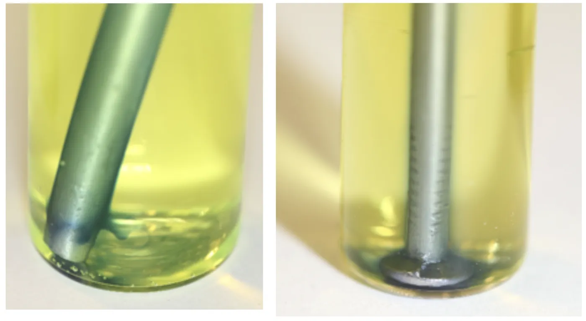
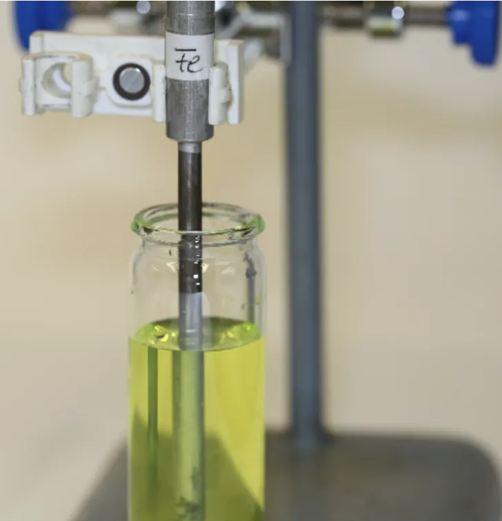
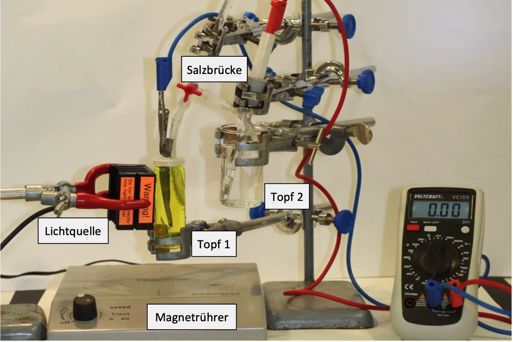
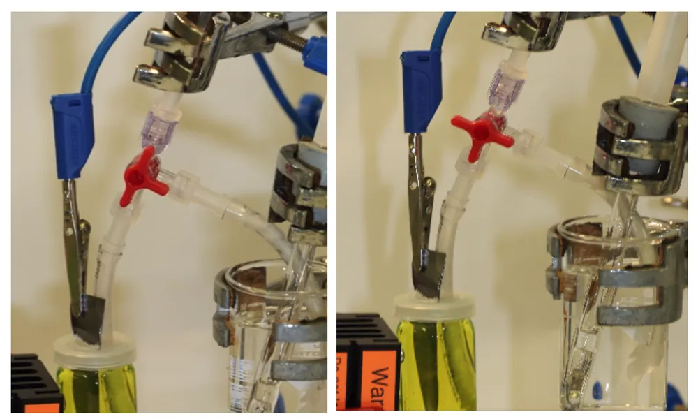

Opferdonor
Liefert die Elektronen
Ethylendiamintetraessigsäure gibt Elektronen ab und wird dabei selbst verbraucht.
2025 haben wir mit der Foto-Blue-Bottle den ersten Schritt der künstlichen Fotosynthese im Modell nachgestellt: Licht treibt ein Elektron dorthin, wo es von allein nicht hinwill. Hier sind alle unsere Versuche – auch der, der nicht geklappt hat.
gelb · Ausgangszustand
Zum Ausprobieren
Wähle aus, was wir mit der gelben Foto-Blue-Bottle-Lösung gemacht haben. Das Fläschchen zeigt, was wir 2025 beobachtet haben.
Beobachtungen aus unserer Jugend-forscht-Arbeit 2025 [17]; Versuchsidee nach M. Tausch [21]. Die Rückreaktion mit Luftsauerstoff haben wir 2025 als mögliche Fehlerquelle diskutiert.
Das Modellexperiment
Wie bei der natürlichen Fotosynthese laufen gekoppelte Reaktionen ab. Für die Foto-Blue-Bottle-Lösung braucht man genau drei Chemikalien.
Opferdonor
Ethylendiamintetraessigsäure gibt Elektronen ab und wird dabei selbst verbraucht.
Photokatalysator
Proflavin schluckt blaues Licht, wird angeregt und reicht ein Elektron weiter.
Substrat
Ethylviologen nimmt das Elektron auf – das blaue Radikalkation EV⁺• entsteht.
Unsere Versuche 2025
Versuch 1 · Spektrum
Mit einem Spektralfotometer haben wir gemessen, welches Licht die Lösung schluckt – vor und nach der Belichtung.
gelbe Form: Maximum 444 nm · blaue Form: 603 nm

Versuch 2 · Lichtfarben
Bei weißem und blauem Licht wurde die Lösung deutlich blau, bei grünem und rotem blieb sie gelb. Auch Erhitzen bis zum Sieden änderte nichts – die Reaktion wird also durch Licht ausgelöst, nicht durch Wärme.
photochemisch, nicht thermisch

Versuch 3 · Konzentrationszelle
Zwei Zellen mit FBB-Lösung, eine davon unter blauem Licht. Schon nach kurzer Zeit zeigte das Voltmeter eine Spannung, die mit der Belichtungsdauer stieg.
≈ 550 mV nach rund 5 Minuten, danach stabilKorrektur gegenüber dem Poster 2025 („nach etwa 20 Minuten“): Unsere Messwerte zeigen das Plateau schon nach rund 5 Minuten (546 mV bei 300 s, 550 mV bei 600 s).

Versuch 4 · Metalle
Wir haben Edelstahl, Zink, Eisen und Kupfer direkt in die Lösung getaucht – ohne Belichtung. Bei den unedlen Metallen Zink und Eisen begann nach etwa drei Minuten eine Blaufärbung: Sie geben selbst Elektronen ab.
Zink und Eisen: ja · Edelstahl und Kupfer: nein

Versuch 5 · Zwei-Topf-Zelle
Topf 1 mit FBB-Lösung und Graphitfolie unter starkem blauem Licht, Topf 2 mit Salzsäure und Platin-Elektrode, verbunden über eine Salzbrücke. Trotz starker Belichtung floss kein Strom und es entstand kein Wasserstoff – vermutlich lag es an der Konstruktion der Salzbrücke.
kein Stromfluss · Ursache vermutlich die SalzbrückeKleiner Trick: Über einen 3-Wege-Hahn ließ sich die Salzbrücke mit einer Spritze befüllen; ein Magnetrührer hielt Topf 1 trotz Abstand in Bewegung. Auch ein Fehlschlag gehört zur Forschung.


Alle Fotos und Messwerte: eigene Jugend-forscht-Arbeit und Poster 2025 [17]
Die Brücke zu 2027
2025 war Proflavin unser Lichtfänger. Dabei kam die Frage auf, die uns heute antreibt: Wie lange hält so ein Farbstoff durch – und kann man das vorhersagen?
Gelernt
Ein Ergebnis ist nur so gut wie seine Kontrollen. Darum hat die Messbox eine Zwillingsprobe, eine Blindprobe und einen Dunkelversuch.
Gelernt
Statt „wird blau“ messen wir mit dem Spektrometer, wie schnell sich die Absorbanz ändert – in Zahlen, mit Wiederholungen.
Gelernt
Auch was nicht klappt, gehört dazu. Darum steht der gescheiterte Wasserstoff-Versuch hier genauso wie die Erfolge.
Foto-Blue-Bottle, Lichtfarben, Konzentrationszelle, Metalle, Zwei-Topf-Zelle.
Neue Frage, neues Team, Fachgespräche mit Experten.
Passungstest bestanden, Konstruktion v4.1, Förderung durch den Sponsorpool Bayern.
Danach die ersten Messreihen – zuerst der Dunkelversuch.
Mit Messbox, Vorhersage und Nachmessung.